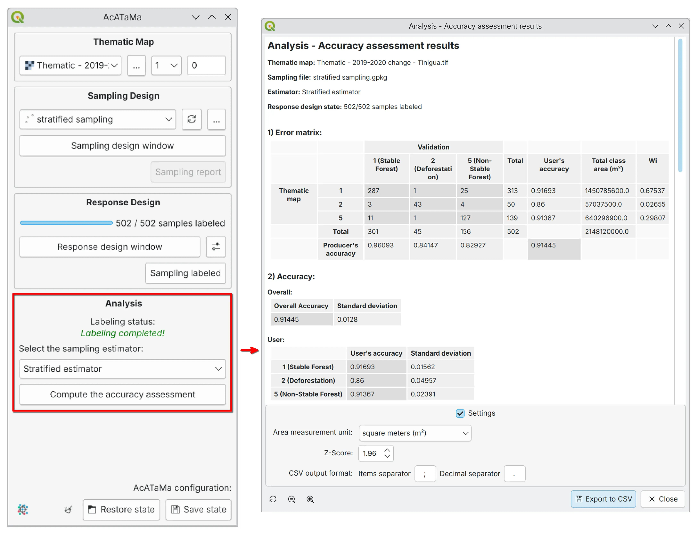

Analysis#
The analysis component of thematic map accuracy assessment focuses on quantifying classification accuracy and estimating mapped class areas while accounting for uncertainty [Stehman and Czaplewski, 1998].
This is where both results of the assessment are produced from the same labeled sample: the accuracy measures that describe map quality, and the area-adjusted estimates with their confidence intervals. See Introduction for why each matters.
{kind=link}

Error Matrix#
A central element of this process is the error (confusion) matrix, which provides a detailed comparison between map classifications and reference data. The matrix enables the calculation of key accuracy metrics:
Overall accuracy
User’s accuracy (commission error)
Producer’s accuracy (omission error)
The confusion matrix is the most widely used method for assessing accuracy. The matrix should remain a cornerstone of the analysis protocol due to its ease of interpretation and valuable descriptive information.
Typically, the map data is arranged in rows and the reference data is arranged in columns in the matrix. The values arranged on the diagonal indicate the degree of agreement between the two data sets.
This matrix is essential for the analysis of the area and variance estimators. The row and column totals of the population error matrix are important because they quantify the distribution, by area, of different land cover classes:
Row totals: Proportion of area of each class according to the map classification
Column totals: Proportion of area according to the reference classification
Map Quality: Accuracy Measures#
Overall Accuracy#
The global accuracy has a direct interpretation in terms of area, since it represents the proportion of area correctly classified.
Note
Overall accuracy hides important information specific to each class. The limitation to overall accuracy is not how it weights or represents class-specific information, but rather that it does not provide class-specific information.
User’s Accuracy#
The number of correctly classified sampling units (\(n_{ii}\)) in a class divided by the total number of sampling units of that same class in the map (\(n_{i+}\)).
User’s accuracy is associated with the measurement of commission errors, which are defined as the inclusion of a map area in a land cover class in which that area should not be included.
Producer’s Accuracy#
The number of correctly classified sampling units (\(n_{jj}\)) in a class divided by the total number of sampling units in the reference data (\(n_{+j}\)) for that class.
Producer’s accuracy is associated with omission errors, which occur when an area is excluded on the map from the land cover class to which it should belong.
Tip
Errors of omission and errors of commission can be problematic to different degrees depending on the goals of a given application. Therefore, it is advisable to have separate estimates of user and producer accuracies. If general measures are reported, they must be accompanied by specific measures of each class.
About Kappa#
Warning
AcATaMa does not include the Kappa coefficient in the results, because in general we don’t recommend using it. The kappa coefficient is widely used as a measure of thematic accuracy in remote sensing. However, Foody [2020] and Pontius Jr and Millones [2011] have shown that the Kappa coefficient is not a good measure of accuracy. Pontius Jr and Millones [2011] argued that Kappa indices are redundant, useless, and/or flawed and should be abandoned because they do not provide any information helping in the purpose of accuracy assessment and map comparison. Foody [2020] said that while Kappa is a useful measure of agreement, it is not a good measure of accuracy.
Area Estimation#
The area estimation component of accuracy assessment adjusts the mapped class areas based on accuracy assessment results, ensuring unbiased and statistically more precise estimates. The statistical reasoning behind this correction is explained in Estimating Area.
According to Olofsson et al. [2014], relying solely on sample counts can introduce significant bias, particularly in land change analyses where errors in classification disproportionately affect small or rare classes. By incorporating adjustments using strata areas in the estimations derived from the error matrix, area estimates are corrected to better reflect true land cover proportions.
Class Area Adjusted#
The accuracy assessment serves to derive the uncertainty of the map area estimates. Whereas the map provides a single area estimate for each class without confidence interval, the accuracy estimates:
Adjust this estimate
Provide confidence intervals as estimates of uncertainty
The adjusted area estimates can be considerably higher or lower than the map estimates [Food and Agriculture Organization of the United Nations (FAO), 2016].
Confidence Intervals#
The estimated area for each class or stratum and the standard error of the estimated area allow obtaining the confidence interval with the percent defined by the z-score value.
It is typically represented by confidence intervals, which indicate the range within which the true area proportions are expected to lie with a specified level of confidence, such as 95% (Z=1.96).
Coefficient of Variation and Uncertainty#
The coefficient of variation is a standardized measure of the dispersion of the estimated area proportions, calculated as the ratio of the standard error to the mean estimate. It provides a relative measure of variability, allowing for comparisons across different classes or studies.
Lower CV indicates higher precision of the estimates
Uncertainty encompasses the potential errors and variability inherent in the sampling design, classification accuracy, and reference data used for accuracy assessment. Quantifying this uncertainty is crucial as it measures the reliability and precision of the area estimates.
Exporting Results#
AcATaMa allows users to export all results present in the analysis window as plain-text tables, enabling users to manage their data and conduct further analysis of the accuracy assessment results.
Equations and Estimators#
Based on the importance of accuracy and area estimation adjustments and recommendations [Olofsson et al., 2014, Olofsson et al., 2013, Global Forest Observations Initiative, 2020, Finegold and Ortmann, 2016, Stehman and Foody, 2019], AcATaMa provides a comprehensive set of analysis results — the error matrix, the quadratic error matrix of the estimated area proportions, the accuracy measures, the adjusted class area values, confidence intervals, and the coefficient of variation — all calculated according to the selected sampling design.
See also
The complete set of equations, measures, and estimators, with the reference for each one, is documented in Equations, Measures and Estimators.
Important
AcATaMa has been rigorously tested using multiple real-world examples across various use cases to ensure the reliability of its results. This involved manually calculating several test cases from scratch and systematically comparing them with AcATaMa’s outputs to validate its computational accuracy.